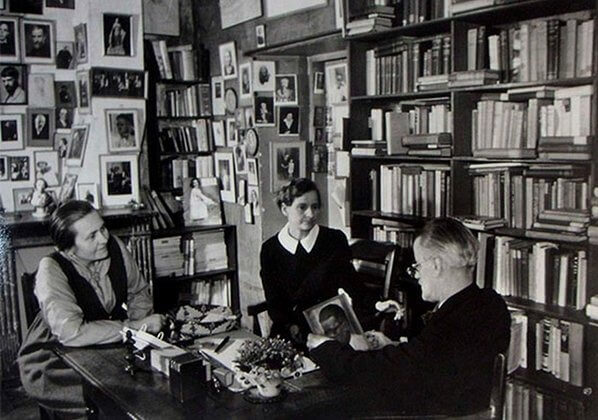

Ni mirar vidrieras, ni postear en redes sociales, ni dejarme llevar por la disciplina del descrédito
Así de breve para mi días civiles, así de extenuante como un título es el reparo con el que segundo a segundo voy viviendo. Este fin de semana pasé un domingo en mi casa. Aproveché para leer alguna novela que tenía por ahí esperando atención. Estudiar un poco y terminar con un ajuste pendiente en mi bicicleta. Cumplí mínimamente con la lectura recreativa. Cuando el sol empezaba a bajar la intensidad de sus presencia una angustia, oh la proximidad de la noche, me sacó del sillón donde mis ojos alternaban lectura con la contemplación de una pared de mi casa. Es que cualquier actividad qeu me proponga se intercala con eso. Con la contemplación de una deslucida y sincera pared de mi departamento.
Para resarcir esa declinación de la luz me apuré con el ajuste del mecanismo de una de las bisagras de mi bicicleta. Tenía marcado en el teléfono un video que explicaba en detalle las instrucciones para este ajuste; cambiar un pequeño block de plástico y para eso desarmar el sitsema de cierre. En fin, no vi el video antes de enfocarme en el trabajo.
Resultado. Desarmé el stem y no supe como volver armarlo. Inútil y plegada mi bicicleta descansa bajo la biblioteca.
El pequeño T pasa estos días sensiblizado por las categorías en los que el mundo actúa con sus velos sobre nuestras cabezas y nuestros homebankings. Parece interesarle las organizaciones económicas y la literatura experimental. Desgraciadamente no soy bueno para explicar. En medida mayor porque no sé al dedillo el funcionamiento del orden mundial, también porque la preocupación por la claridad es, en mis largos años, reciente.
Leí un libro de Sandro Barrella que se llama Villa Santa Rita, o el libro de los pasajes. Un adelanto de este libro que de alguna manera imagina una especie de escritura catastral, en el que a través de los bosques de Europa presencia la posibilidad de una conexión entre esa nutrida variedad de pueblos y culturas. Es algo difícil su lectura y eso le juega a favor. Una lectura de letanías que invocan una presencia. La cultura de otra década pegada en el irregular hollín de aquellos murmullos que nacen y viven por la Av Alvarez Jonte.
Murió, estos días que no escribí, el gran Daniel Johnston. Tan difícil escucharlo pero un gran artista. Un artista que planteaba todo con una lucidez y síntesis. Un gran artista popular que ojalá descanse en paz. Se me rompió el cargador de la Macbook así que tuve que volver a la de escritorio. Ese cambio hizo que no tenga configurado bashblog para seguir viva esta comunicación. Ojalá nos leamos más seguido. Saludos T
Tags: semana, daniel johnston, saludos